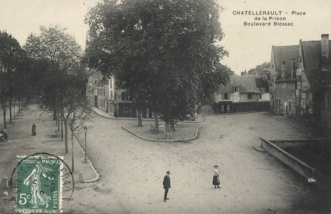
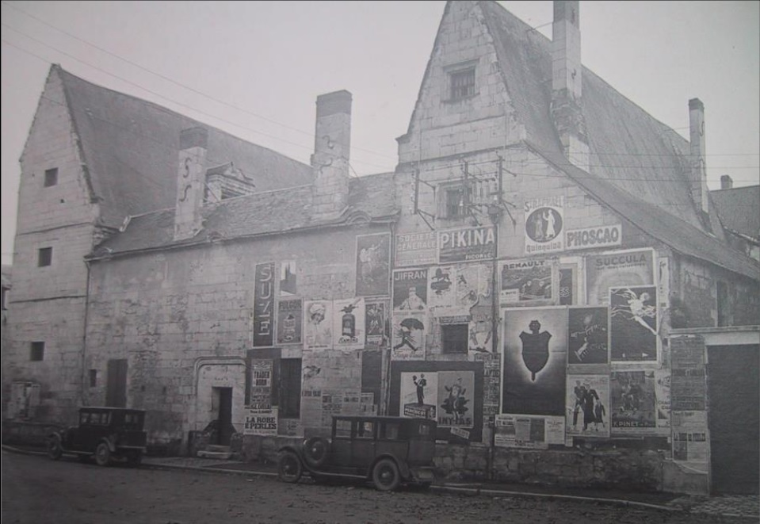
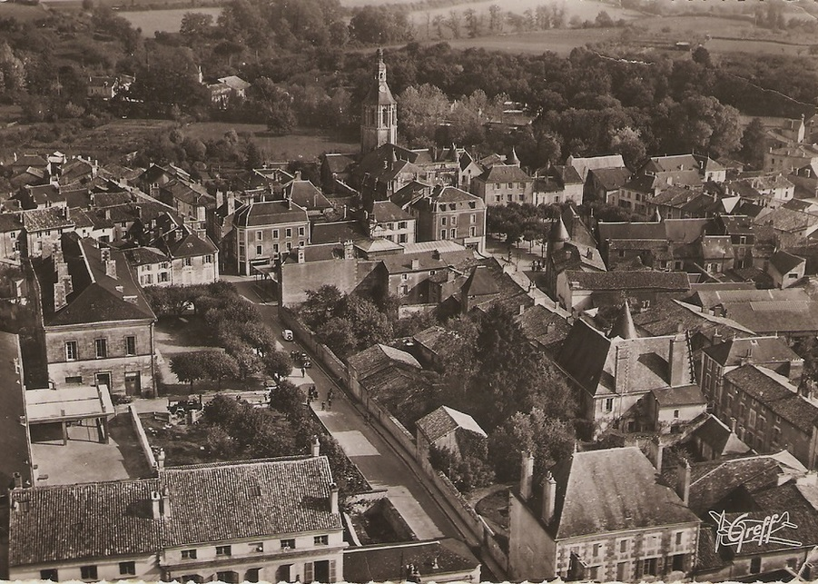
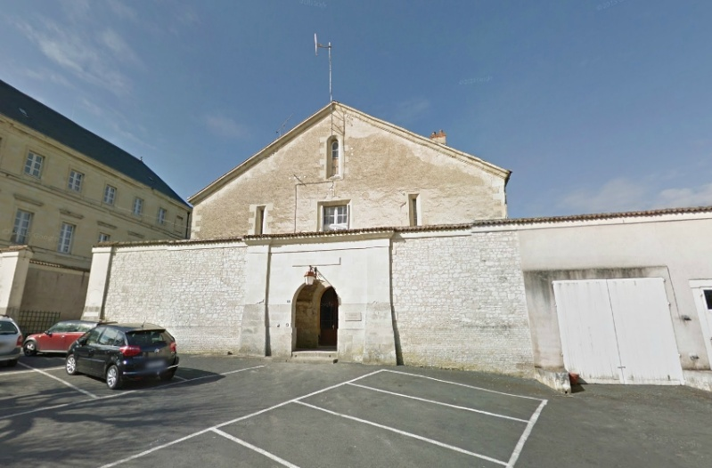
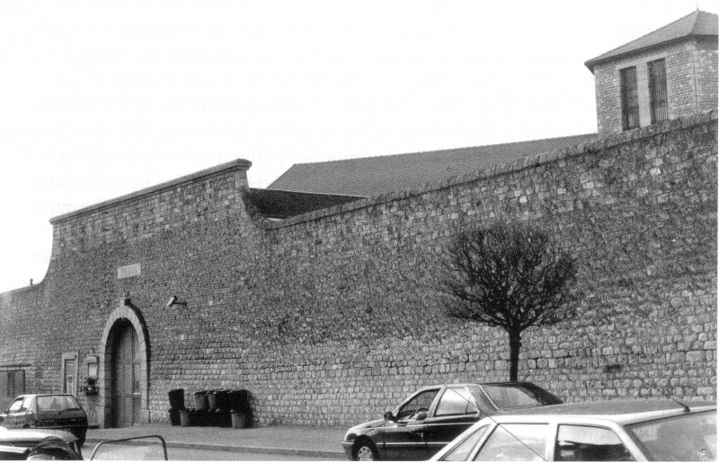
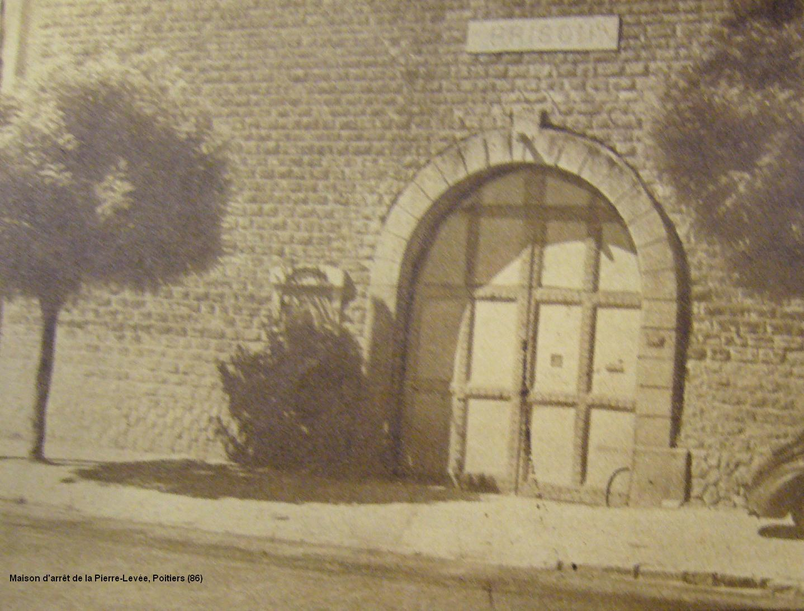

| Département | Images | Ville | Nom | Adresse | Période | Capacité | Histoire du lieu | Nombre d'exécutions |
| Vienne (86) |   |
Châtellerault | Hôtel Nicolas Alaman | Place de la Prison / du Châtelet | 1817-1926 | Hôtel particulier, créé par l'ambassadeur Nicolas Alaman, devenu au XVIIIe siècle couvent. Après sa fermeture comme prison, il devient hospice, puis hôpital, et enfin, depuis 2014, l'office de tourisme. | Aucune exécution. | |
| Vienne (86) |  |
Civray | Maison d'arrêt et de correction | Place du Palais (38, rue Victor Hugo) | 1832-1926 | Construite en même temps que le tribunal et que la gendarmerie, à un emplacement voisin. L'ancien tribunal est désormais la mairie de Civray, la prison a été détruite pour construire la Poste. | Aucune exécution | |
| Vienne (86) |  |
Loudun | Maison d'arrêt et de correction | 9, rue de la Mairie | 1869-1926 | La prison de Loudun naît sur les restes du couvent des Cordeliers, dont les bâtiments désertés sous la Révolution sont cédés en 1820 à la ville de Loudun. Cependant, il faut attendre 43 ans, soit le 09 mars 1863, pour que le maire Nosereau obtienne le feu vert pour la construction de deux bâtiments voisins : une mairie/tribunal et une prison. Quatorze ans après sa fermeture, le 15 février 1940, la prison devient maison d'accueil pour réfugiés venus de la Moselle. Désormais, on y trouve une annexe de la mairie. | Aucune exécution | |
| Vienne (86) | Montmorillon | Maison d'arrêt et de correction | Place de la Victoire | 1847-1926 | Ouverte en remplacement de la Tour de la Maison-Dieu, prison de 1789 à 1847. Jouxtant la gendarmerie, la prison, rénovée en 1970, est désormais une maison. | Aucune exécution | ||
| Vienne (86) |   |
Poitiers | Prison de la Pierre-Levée | 205, faubourg du Pont-Neuf | 1906-2009 | 71 places (1962) | En forme de Y. Devenu centre de semi-liberté après l'ouverture du centre pénitentiaire de Vivonne en 2009. Murailles abattues en 2012. | Trois exécutions en 1949 et 1950. |
{kind=link}
{kind=link}
{kind=link}
{kind=link}
{kind=link}
{kind=link}